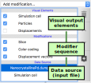

Pipeline concept
The workflow in OVITO is based on a data pipeline concept. What it means is that you define a sequence of operations (called modifiers) in OVITO that get applied to the imported simulation dataset one after the other. The output of this processing pipeline is displayed on the screen by the program:

OVITO offers an extensive set of modifier functions to choose from (see reference section), each performing a specific task like selecting, coloring, analyzing, or filtering particle structures. By combining these basic building blocks and arranging them in a pipeline sequence, you can visualize or analyze the simulation dataset in exactly the way you need it.
A key advantage of this approach is that the data pipeline lets you retroactively change, delete or amend the applied operations if needed. No modifications you make to the dataset are permanent. You always have the possibility to subsequently adjust individual operations, remove them again from the pipeline, or insert additional operations.
The program keeps around an unmodified copy of the pipeline’s input data in memory, and whenever you change the pipeline in some way, OVITO recomputes the output of the pipeline and updates the display to reflect your changes. This happens automatically and almost in real-time.
Similar types of “non-destructive” workflow concepts can be found in modern photo editing and 3D modeling programs, for example. In OVITO this approach provides you with a great deal of flexibility while designing and exploring new data analysis and visualization setups. And the pipeline architecture offers another important advantage: Once you have figured out the right modification steps to solve your specific analysis problem, you can apply the same processing pipeline to any number of other input datasets and batch-process a whole range of simulation trajectories.
Pipeline editor
{kind=link}
The pipeline editor, shown in the screenshot on the right, is the central place in OVITO’s user interface where you perform most operations. It displays the current data pipeline and lets you insert new modifiers into the pipeline, reorder them and edit their parameters. The editor is divided into three sections:
- Visual elements
The graphical elements produced by the data pipeline
- Modifications
The current sequence of modifiers that are part of the pipeline
- Data source
The input data for the pipeline (typically an external data file)
Note that, right after importing a new simulation file into OVITO, the pipeline contains no modifiers yet and the “Modifications” section won’t be visible. Selecting an element in the pipeline editor opens a corresponding parameters panel below the editor, which allows you to change its parameters.
The drop-down list labeled Add modification… at the top of the pipeline editor offers the available modifiers that may be applied to the data. Picking an entry from that box newly inserts the modifier into the pipeline, right above the currently selected pipeline item. Note that the data pipeline is presented in bottom-up order: The leading modifier of the pipeline, acting first on the input data, appears at the bottom. The pipeline depicted in the screenshot, for example, would first compute the displacement vectors, then assign a color coding to the particles and finally slice the dataset.
You can temporarily disable modifiers in the pipeline by unchecking the box next to them. To permanently remove a modifier from the pipeline, use the Delete Modifier button found in the toolbar on the right. And since the order in which actions are performed sometimes matters, you can rearrange the modifiers within the pipeline using drag-and-drop operations or the up/down arrow buttons in the toolbar.
Visual elements
The dataset fed into the pipeline is usually a collection of several different data fragments, for instance, the particle positions, bond topology, and simulation cell geometry. Modifiers in the pipeline may dynamically add further pieces of information to that, e.g. displacement vectors calculated from the trajectories of particles. From all these different kinds of data leaving the pipeline, a visual representation must be produced in the viewports. This is the responsibility of so-called visual elements.
Visual elements are automatically generated by the pipeline system and they all appear in the corresponding top section of the pipeline editor. Each element provides settings that control the appearance of the data visualization, which can be edited in the corresponding parameter panel. The visibility of individual elements in the viewports and in rendered images can be changed by checking/unchecking the corresponding box in the pipeline editor.
Transient pipeline states and particle selection
Some modifier functions in OVITO, for example the Delete selected modifier,
act only on the currently selected subset of particles or bonds. What elements are currently selected, is determined by the value of their
Selection property as explained in the previous section.
The program provides several modifiers for selecting particles based on different criteria.
It is important to understand that the selection happens dynamically as a processing step within the
data pipeline: First, one modifier selects some of the particles and then a subsequent modifier operates on that selected subset.
Within the pipeline, the selection will stay the same up to the point where another modifier further down the
pipeline replaces it again.
This system allows you to apply different operations to different groups of particles in a successive fashion. For example, you could use a Select type modifier to first select particles of one chemical or structural type and then apply an Assign color modifier to give them a particular color. Next, you could insert another instance of the Select type modifier to select another group of particles and subsequently assign them a different color using another Assign color modifier instance.
Note that data visualization always happens only for the final results leaving the pipeline. That means in the viewports you will only observe the final selection state of the particles (OVITO highlights them with red color). If you would like to inspect a transient state of the data at some intermediate point along the pipeline, you have to temporarily disable the subsequent modifiers in the pipeline editor.